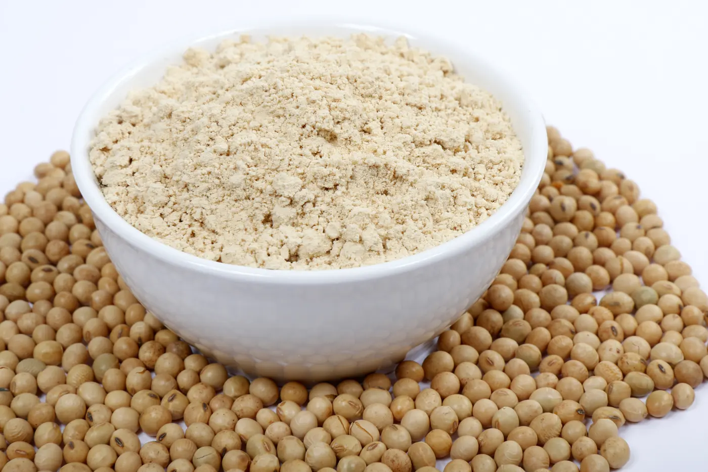
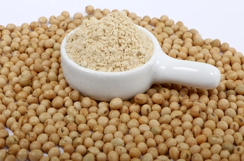
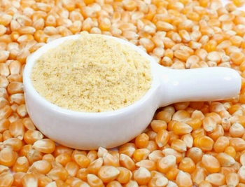
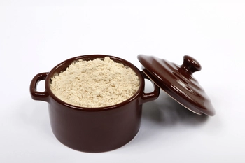
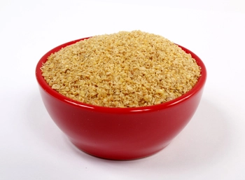
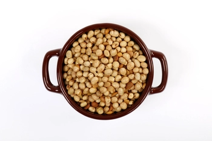
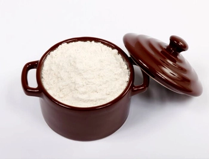
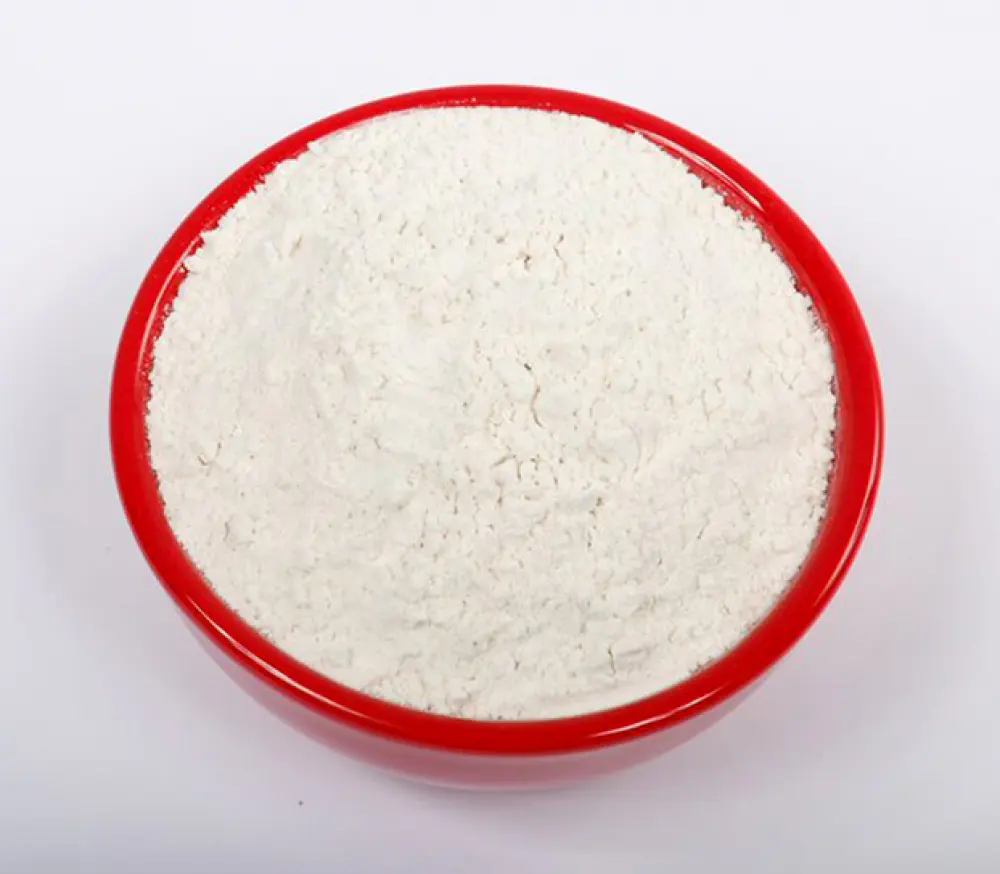

Linha
Nutrição Animal
Ingredientes para formulações de pets, pré-iniciais de suínos, rações e processos que exigem proteína, energia e padronização.

Farinha de Soja Integral Micronizada
A Farinha de Soja Integral Micronizada Naturalle é produzida a partir de grãos de soja cuidadosamente selecionados e processados com tecnologia…
Ver ficha técnica
Farinha de Soja Micronizada de Baixa Fibra
A Farinha de Soja Micronizada de Baixa Fibra Naturalle é produzida a partir do grão de soja sem casca, por meio
Ver ficha técnica
Farinha de Milho
Produzida a partir do milho integral moído, resultando em um ingrediente de granulometria
Ver ficha técnica
Proteína de Soja Micronizada
Produzida a partir da soja desengordurada, submetida a um processo de micronização que proporciona granulometria fina, excelente homogeneidade e…
Ver ficha técnica
Farelo de Soja Integral
Produzido pelo nosso processo exclusivo de pré-esmagamento e cozimento úmido com vapor direto, com sensíveis controles de temperatura visando a…
Ver ficha técnica
Soja Grão Desativada
Produzido pelo processo exclusivo Naturalle que preserva de forma substancialmente diferenciada todos os aminoácidos, conferindo-lhe o mais…
Ver ficha técnica
Farinha de Arroz
Produto processado a partir da Quirela de Arroz Micronizada. Trata-se de um pó homogêneo, extremamente fino de cor branca, sabor e odor…
Ver ficha técnica
Farinha de Arroz Pré-Gelatinizada
Produto processado a partir da Quirela de Arroz Pré-Cozida e Micronizada. Trata-se de um pó homogêneo, extremamente fino de cor bege, sabor e odor…
Ver ficha técnica